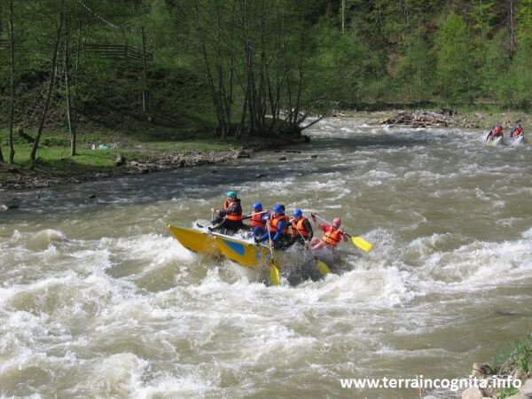

12-15 жовтня 2017
Озерми Свидовця
Третій за висотою хребет у Карпатах — популярний об’єкт пішохідного та велотуризму. Що вам більше подобається — високогірні озера, водоспади чи безкраї краєвиди на гори? На Свидовці є все!
Читати далі
2-4 вересня 2017
Буцький каньойн
Буцький каньйон називають “маленькою Швейцарією”. Багато мандрівників відзначають це місце, що нагадує фіорди в Норвегії. Асоціації у кожного свої, але місце справді унікальне. Воно розташоване на річці Гірський Тікич.
Читати далі
22-24 серпня 2017
Нестримний Черемош
В високу воду човен стрімко несеться бурхливим потоком, пінисті хвилі накривають з головою, а рафт розгойдується на високих гребнях валів. Рафтинг на Черемоші заряджає, і навіть у мокрому гідрокостюмі знову рвешся на сплав по порогах.
Читати далі